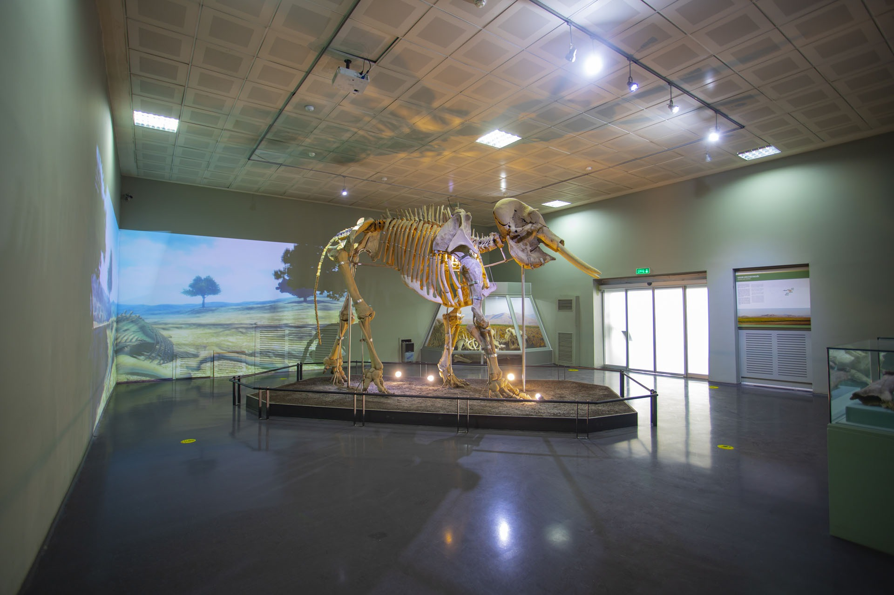

|  |
Kahramanmaraş Arkeoloji Müzesi, şehrin zengin tarihini ve kültürel mirasını gözler önüne seren önemli bir müzedir. 1975 yılında hizmete açılan müze, Paleolitik dönemden Osmanlı dönemine kadar uzanan geniş bir zaman dilimine ait eserleri barındırmaktadır. Müze, hem Kahramanmaraş’ın hem de çevresindeki antik yerleşimlerin arkeolojik zenginliğini sergileyerek bölgenin tarih boyunca önemli bir yerleşim merkezi olduğunu kanıtlamaktadır.
Müzenin koleksiyonunda özellikle Neolitik, Kalkolitik, Tunç ve Demir Çağı’na ait buluntular dikkat çekmektedir. Domuztepe, Direkli Mağarası ve Gâvur Gölü gibi arkeolojik alanlardan çıkarılan eserler, bölgedeki insan yaşamının binlerce yıl öncesine dayandığını göstermektedir. Ayrıca müzede, Roma ve Bizans dönemlerine ait heykeller, yazıtlar, sikkeler ve günlük yaşam eşyaları da sergilenmektedir. Bu eserler, geçmiş uygarlıkların sosyal, ekonomik ve dini yaşamına ışık tutmaktadır.
Modern bir sergileme anlayışıyla düzenlenen müze, ziyaretçilere hem görsel hem de bilgilendirici bir deneyim sunmaktadır. Etkileyici dioramalar, fosil kalıntıları ve bölgeye özgü buluntularla Kahramanmaraş’ın tarihsel süreci kronolojik olarak anlatılmaktadır. Şehri ziyaret eden tarih meraklıları için Kahramanmaraş Arkeoloji Müzesi, geçmişin izlerini yakından görme ve Anadolu’nun kültürel zenginliğini derinlemesine keşfetme fırsatı sunan önemli bir duraktır.
Kahramanmaraş Arkeoloji Müzesi, bölgenin binlerce yıllık tarihini gözler önüne seren önemli bir kültür merkezidir. 1975 yılında açılan müze, Paleolitik dönemden Osmanlı dönemine kadar uzanan geniş bir zaman dilimine ait arkeolojik eserleri barındırır. Domuztepe, Direkli Mağarası ve Gâvur Gölü gibi önemli kazı alanlarından çıkarılan buluntular, bölgenin tarih boyunca birçok medeniyete ev sahipliği yaptığını kanıtlar. Müzede taş baltalar, çanak çömlekler, figürinler, heykeller, yazıtlar ve sikkeler gibi eserler kronolojik bir düzen içinde sergilenmektedir.
|